input_parameters package¶
Submodules¶
input_parameters.general_parameters module¶
Module gathering all general input parameters used for the simulation.
| Authors: | Alexandre Lasheen, Danilo Quartullo, Helga Timko |
|---|
- class input_parameters.general_parameters.GeneralParameters(n_turns, ring_length, alpha, momentum, particle_type, user_mass=None, user_charge=None, particle_type_2=None, user_mass_2=None, user_charge_2=None, number_of_sections=1)¶
Bases: object
Object containing all the general input parameters used for the simulation.
- alpha = None¶
- Momentum compaction factor (up to 2nd order) for each RF section
 Should be given as a list for multiple RF stations (each element of the list should be a list of alpha factors up to 2nd order)
Should be given as a list for multiple RF stations (each element of the list should be a list of alpha factors up to 2nd order)
- alpha_order = None¶
Number of orders for the momentum compaction
- beta = None¶
Synchronous relativistic beta (program) 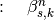
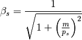
- cycle_time = None¶
Cumulative times [s] taken from preprocess ramp method
- energy = None¶
Synchronous total energy (program) in [eV] 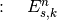
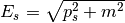
- eta_0 = None¶
Slippage factor (0th order) 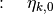
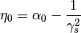
- eta_1 = None¶
Slippage factor (1st order) 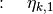
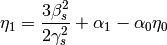
- eta_2 = None¶
Slippage factor (2nd order) 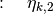

- eta_generation()¶
- Pre-processing of the slippage factor parameters with respect to the input momentum compaction factor (up to 2nd order) and the momentum program.For eta coefficients, see Lee: Accelerator Physics (Wiley).
- f_rev = None¶
Revolution frequency [Hz] 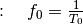
- gamma = None¶
Synchronous relativistic gamma (program) 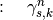
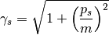
- kin_energy = None¶
*Synchronous kinetic energy (program) in [eV] .. math:: E_s^kin = sqrt{ p_s^2 + m^2 } - m
- momentum = None¶
- Synchronous momentum (program) in [eV] for each RF section 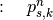Can be given as a single constant value, or as a program of (n_turns + 1) turns.In case of several sections without acceleration, input: [[momentum_section_1], [momentum_section_2]]In case of several sections with acceleration, input: [momentum_program_section_1, momentum_program_section_2]
- n_sections = None¶
- Number of RF sections over the ring; default is one.
- n_turns = None¶
Number of turns of the simulation
- omega_rev = None¶
Revolution angular frequency [1/s] 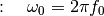
- particle_type = None¶
- Particle type. Recognized types are: ‘proton’ and ‘electron’.Use ‘user_input’ to input mass and charge manually.Input particle mass in [eV]Input particle charge in [e] 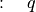
- particle_type_2 = None¶
Second particle type: optional; does not affect the momentum, energy, beta, and gamma.
- ring_circumference = None¶
- Ring circumference is the sum of section lengths 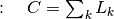
- ring_length = None¶
- Ring length contains the length of the RF sections, in [m]Should be given as a list for multiple RF stations
- ring_radius = None¶
Ring radius in [m]

- t_rev = None¶
Revolution period [s] 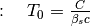
input_parameters.preprocess module¶
Function(s) for pre-processing input data
| Authors: | Helga Timko, Alexandre Lasheen, Danilo Quartullo |
|---|
- input_parameters.preprocess.loaddata(filename, ignore=0, delimiter=None)¶
Loading column-by-column data from file to numpy arrays. Ignore x lines from the head of the file.
- input_parameters.preprocess.preprocess_ramp(particle_type, circumference, time, data, data_type='momentum', interpolation='linear', smoothing=0, flat_bottom=0, flat_top=0, t_start=0, t_end=-1, plot=False, figdir='fig', figname='data', sampling=1, user_mass=None, user_charge=None)¶
Pre-process acceleration ramp data to create input for simulation parameters. Input: absolute time [s] and corresponding momentum [eV/c] or total energy [eV] or kinetic energy [eV]. Output: cumulative time array [s], interpolated momentum [eV/c]. ‘interpolation’: restricted to linear and cubic at the moment. ‘flat_bottom/top’: extra time can be be added in units of time steps; constant extrapolation of the first/last data point is used in this case. ‘t_start/end’: cutting the inputed momentum program to the times to be simulated ‘plot’: optional plotting of interpolated array with ‘sampling’ frequency; saved with name ‘figname’ into ‘figdir’.
- input_parameters.preprocess.preprocess_rf_params(general_params, time_arrays, data_arrays, interpolation='linear', smoothing=0, plot=True, figdir='fig', figname=['data'], sampling=1)¶
Pre-process RF programs to be input into RF parameters, such as RF voltage [V], phase [rad], harmonic as a function of time [s]. time_arrays and data_arrays are two lists of numpy arrays: thi first array of time_arrays corresponds to the first array of data_arrays and so on. Use ‘loaddata’ function to load data with correct format. Pre-requisite: general parameters need to be set up. ‘interpolation’: restricted to linear at the moment. ‘flat_bottom’: extrapolation to flat vector during given time steps; Flat top time automatically adjusted. ‘plot’: optional plotting of interpolated array with ‘sampling’ frequency; saved with name ‘figname’ into ‘figdir’. Note that figname has to be a list of string where each string corresponds to an interpolated array.
input_parameters.rf_parameters module¶
Module gathering and processing all RF parameters used in the simulation.
| Authors: | Alexandre Lasheen, Danilo Quartullo, Helga Timko |
|---|
- class input_parameters.rf_parameters.RFSectionParameters(GeneralParameters, n_rf, harmonic, voltage, phi_offset, phi_noise=None, omega_rf=None, section_index=1, accelerating_systems='as_single')¶
Bases: object
Object gathering all the RF parameters for one section (sections defined in tracker.RingAndRFSection), and pre-processing them for later use.
How to use RF programs: - For 1 RF system and constant values of V, h or phi, just input the single value
- For 1 RF system and varying values of V, h or phi, input an array of n_turns values
- For several RF systems and constant values of V, h or phi, input lists of single values
- For several RF systems and varying values of V, h or phi, input lists of arrays of n_turns values
Optional: RF frequency other than the design frequency. In this case, need to use the Phase Loop for correct RF phase!
- E_increment = None¶
Energy increment (acceleration/deceleration) between two turns, for one section in [eV] 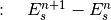
- Qs = None¶
Synchrotron tune [1]
- alpha_order = None¶
Import alpha order for the section (from GeneralParameters)
- beta = None¶
Import synchronous relativistic beta [1] (from GeneralParameters)
- charge = None¶
Import particle mass [e] (from GeneralParameters)
- counter = None¶
- Counter to keep track of time step (used in momentum and voltage)Definined as a list in order to be passed by reference.
- dphi_RF = None¶
Accumulated RF phase error of each harmonic system
- dphi_RF_steering = None¶
Accumulated RF phase error of each harmonic system
- energy = None¶
Import synchronous total energy [eV] (from GeneralParameters)
- eta_0 = None¶
Slippage factor (0th order) for the given RF section
- eta_1 = None¶
Slippage factor (1st order) for the given RF section
- eta_2 = None¶
Slippage factor (2nd order) for the given RF section
- eta_tracking(beam, counter, dE)¶
The slippage factor is calculated as a function of the energy offset (dE) of the beam particle. By definition, the slippage factor in ith order is:
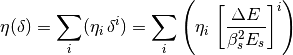
- gamma = None¶
Import synchronous relativistic gamma [1] (from GeneralParameters)
- harmonic = None¶
- RF harmonic number list 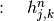See note above on how to input RF programs.
- length_ratio = None¶
Length ratio of the section wrt the circumference
- momentum = None¶
Import momentum program [eV] (from GeneralParameters)
- n_rf = None¶
- Number of RF systems in the section 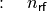Counter for RF is:

- n_turns = None¶
- Number of turns for the simulationCounter for turns is:

- omega_RF_d = None¶
Design RF frequency of the RF systems in the station [Hz]
- omega_s0 = None¶
Central angular synchronous frequency, w/o intensity effects [1/s]
- phi_RF = None¶
Initial, actual RF phase of each harmonic system
- phi_noise = None¶
- Phase noise array (optional). Added to all RF systems.
- phi_offset = None¶
- Design RF phase offset list in [rad] 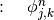See note above on how to input RF programs.
- phi_s = None¶
Synchronous phase for this section, calculated from the transition energy and the momentum program.
- ring_circumference = None¶
Import ring circumference [m] (from GeneralParameters)
- section_index = None¶
- Index of the RF section – has to be uniqueCounter for RF section is:
 In the user input, the section_index goes from 1 to kThis index is then corrected in the constructor in order to go from 0 to k-1 (as Python indexing starts from 0)
In the user input, the section_index goes from 1 to kThis index is then corrected in the constructor in order to go from 0 to k-1 (as Python indexing starts from 0)
- section_length = None¶
Import section length [m] (from GeneralParameters)
- sign_eta_0 = None¶
Sign of eta_0
- t_rev = None¶
Import revolution period [s] (from GeneralParameters)
- voltage = None¶
- RF voltage program list in [eV] 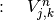See note above on how to input RF programs.
- input_parameters.rf_parameters.calc_phi_s(RFSectionParameters, accelerating_systems='as_single')¶
- The synchronous phase calculated from the rate of momentum change.Below transition, for decelerating bucket: phi_s is in (-Pi/2,0)Below transition, for accelerating bucket: phi_s is in (0,Pi/2)Above transition, for accelerating bucket: phi_s is in (Pi/2,Pi)Above transition, for decelerating bucket: phi_s is in (Pi,3Pi/2)The synchronous phase is calculated at a certain moment.Uses beta, energy averaged over the turn.
- input_parameters.rf_parameters.input_check(input_value, expected_length)¶
- Function to check the length of the inputThe input can be a float, int, np.ndarray and listIf len(input_value) == 1, transform it to a constant arrayIf len(input_value) != expected_length and != 1, raise an error